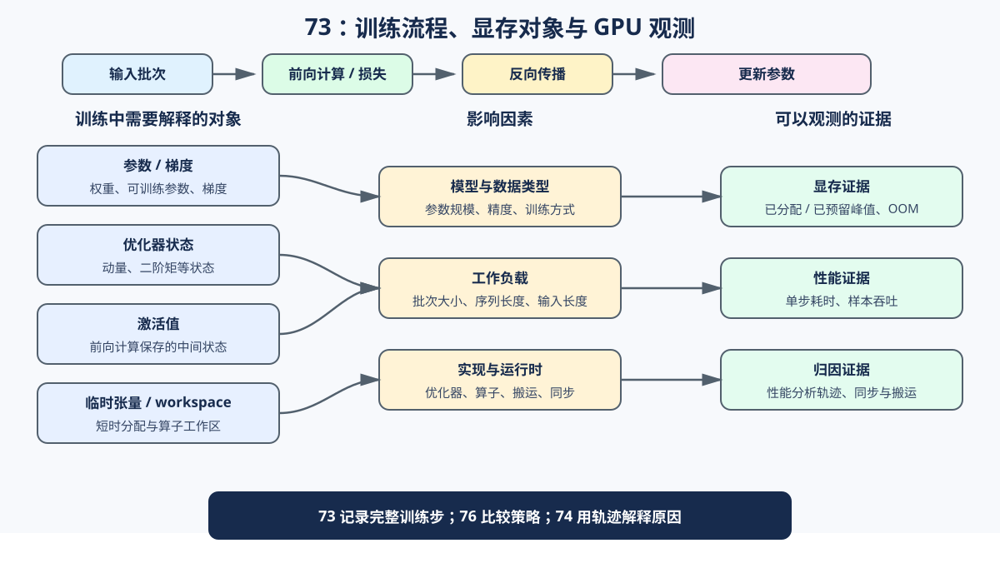
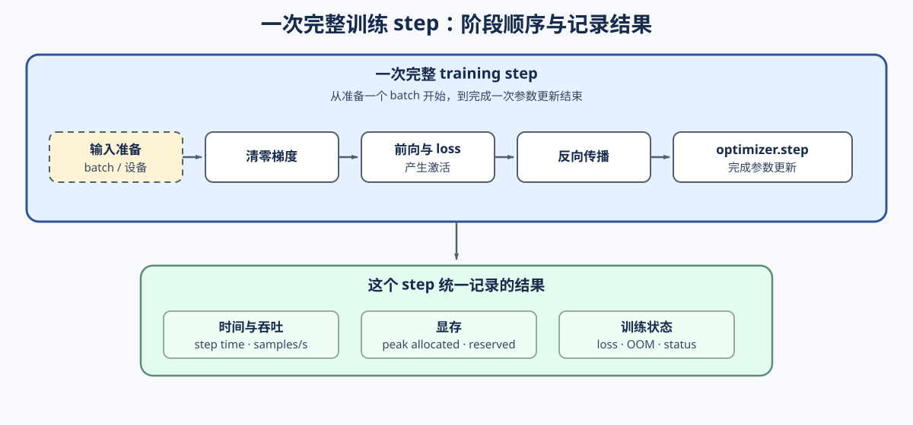

前置阅读
导语： 先理解反向传播、显存对象和训练侧显存手段，再进入本节建立统一测量口径；本节重点不是重复讲机制，而是为后续 76 的方案 benchmark 提供可靠 baseline。
相关阅读
导语： 完成本节后，显存路线先进入 76 比较 checkpoint / offload，再进入 75 形成预算决策，最后由 74 做 profiling 驱动的端到端验证；如果关注训练项目交付，可回到 60 核对训练成本。
Step 1：定义显存账本与可测假设
先把一次训练过程看成一条完整链路：输入 batch 经过 forward 和 loss，backward 产生梯度，optimizer.step 更新参数。显存对象会在这条链路的不同阶段出现或释放。
本 Step 要回答两个问题：一次训练 step 的显存和时间可能由哪些对象共同造成？后面应该改变哪些变量、记录哪些指标来验证假设？先用显存对象账本描述可能开销，再把每一项转成可测假设。输入是模型、训练 batch、dtype、optimizer 和 workload；输出是显存对象账本、可测假设和对应 GPU 观测字段。
CPU 用于检查对象关系、账本字段和待验证假设；GPU 用于验证 step time、samples/s、peak allocated、peak reserved、OOM 和训练状态。账本用于组织问题，不等同于 CUDA allocator 的实际峰值；73 只记录 baseline，checkpoint 的重算和 offload 的搬运留给 76。
| 显存对象 |
典型内容 |
生命周期 |
主要变化因素 |
CPU 可验证内容 |
GPU 实测字段 |
本节要检验的假设 |
| 参数 |
模型权重和可训练参数 |
整个训练过程 |
模型规模、dtype、训练方式 |
参数数量与理论字节数 |
peak_mem_mb、参数账本 |
模型和 dtype 改变会影响固定占用 |
| 梯度 |
参与更新的参数对应的梯度 |
backward 后到 zero_grad |
可训练参数量、梯度 dtype |
梯度数量与字节数 |
峰值显存、OOM 状态 |
全参数更新通常需要更多梯度状态 |
| optimizer state |
AdamW 的动量、二阶矩等状态 |
第一次更新后持续存在 |
optimizer、参数量、状态精度 |
state tensor 字节数 |
peak_mem_mb、peak_reserved_mb |
optimizer state 可能成为训练预算的重要部分 |
| activation |
中间隐藏状态、attention / MLP 中间结果 |
forward 到 backward 使用完成 |
batch_size、seq_len、hidden size、checkpoint |
账本关系与生命周期说明 |
峰值显存、OOM 状态 |
batch 或序列长度增大时，activation 压力可能上升 |
| 临时张量 / workspace |
loss、通信缓冲区、kernel workspace |
某个算子执行期间 |
kernel、算子实现、运行时 |
只能记录其角色 |
peak_mem_mb 与 profiler trace |
峰值可能来自短时分配，而非长期状态 |
| CPU-GPU 搬运与同步 |
输入拷贝、等待、offload 缓冲区 |
发生在数据或状态移动期间 |
数据管线、offload、同步点 |
记录流程和字段 |
step time、吞吐、trace |
时间代价需要用 GPU 计时或 trace 验证 |
下面的关系图先展示训练 step，再建立账本对象、影响因素和 GPU 观测结果之间的关系；表格随后列出每类对象对应的验证字段。

<div align="center"><strong>训练 step：显存对象受到 workload 和实现因素影响，最终通过峰值、时间和 trace 观测。</strong></div>
Step 2：定义 training step 与测量边界
本 Step 先确定一次 training step 从哪里开始、到哪里结束，以及哪些开销会进入 73 的 baseline。CPU 只验证阶段定义和统计字段；GPU 才测量真实的完整 step。73 不在这里判断具体瓶颈，阶段归因交给 74。一次完整 training step 可以写成 zero_grad → forward → loss → backward → optimizer.step：清理上一轮梯度，计算输出和 loss，生成梯度，再更新参数。
| 阶段 |
这一步做什么 |
73 是否计入 |
后续分析 |
zero_grad |
清理上一轮梯度 |
是 |
观察整体 step 成本 |
| forward / loss |
根据输入计算隐藏状态、logits 和 loss |
是 |
74 分析 activation 和算子 |
| backward |
根据 loss 计算梯度，可能读取 forward 暂存的中间结果 |
是 |
76 / 74 分析 checkpoint 和重算 |
optimizer.step |
使用梯度更新参数，并维护 optimizer state |
是 |
74 分析 optimizer 开销 |
| 输入准备与同步 |
准备输入、设备拷贝和必要的 CUDA 等待 |
当前不单独拆分 |
74 分析数据、搬运和同步 |

<div align="center"><strong>上方定义 73 的测量边界，下方连接 17 / 18 / 12 / 19 / 42 的机制与 73 / 76 / 75 / 74 的项目证据链。</strong></div>
因此，73 能回答“完整 training step 的平均成本是多少”，不能仅凭总耗时回答“哪个阶段是瓶颈”，也不能从 peak allocated 拆出各类显存对象。
Step 3：固定实验协议与 baseline 报告
先定义统一的实验协议和报告字段，再分别用 CPU 模板检查逻辑、用 GPU Step 5 采集真实训练成本。CPU 只验证计时、账本、字段和异常边界；GPU 才产生真实的时间、吞吐、显存和 OOM 证据。
实验按“先确认流程、再固定口径、最后比较指标”的顺序进行。smoke 用于确认模型、依赖和报告流程可运行；固定的 pressure workload 用于获得当前条件下的 GPU baseline。dtype、batch / seq_len、checkpoint / offload、数据搬运和同步分别对应不同假设，一次只改变一个方向，并使用独立输出文件。
每次 GPU 运行都要同时保存配置、环境、指标、训练状态和证据等级，最终生成一份 JSON 报告，而不是只查看屏幕输出。73 的主产物是固定 workload 下的训练 baseline；可选 AMP 对照只用于观察 dtype 对训练成本的影响，不属于 checkpoint / offload 策略优化。
73 的主产物是固定 workload 下的训练 baseline 报告：它要说明当前训练成本是多少，以及哪些显存对象值得继续验证。baseline 报告可作为 76 的输入，但不替代 75 的预算决策和 74 的阶段归因；checkpoint 的重算和 offload 的搬运留给 76 验证。
| 类型 |
项目 |
具体内容 |
目的 / 用途 |
| 实验步骤 |
1. smoke |
确认模型、依赖和报告流程可运行 |
检查流程 |
| 实验步骤 |
2. 固定条件 |
固定模型、dtype、optimizer、batch、seq_len、输入和 seed |
保证 baseline 可复现 |
| 实验步骤 |
3. pressure |
warm-up 后重复测量 |
获得正式 GPU baseline |
| 实验步骤 |
4. 单变量对照 |
每次只改变一个变量，使用独立输出文件 |
保持结果可归因 |
| 实验步骤 |
5. 比较指标 |
对比 step time、samples/s、显存、loss 和 OOM |
判断收益是否伴随代价 |
| 报告字段 |
workload |
model、dtype、batch、seq_len、warmup、iters、seed |
判断结果是否可复现 |
| 报告字段 |
环境 |
GPU、PyTorch、CUDA、运行后端 |
判断硬件证据边界 |
| 报告字段 |
性能 |
step time、samples/s |
衡量训练成本 |
| 报告字段 |
显存 |
peak allocated、peak reserved、OOM |
衡量容量压力 |
| 报告字段 |
训练状态 |
loss / eval_loss |
防止只追求速度或显存 |
| 报告字段 |
证据等级 |
CPU、GPU smoke、repeated benchmark |
限定结论强度 |
Step 4（CPU 代码练习）：验证测量与账本逻辑
本 Step 使用 CPU 示例函数，检查训练计时、吞吐统计和显存对象账本能否正确生成报告字段。输入是训练函数、测量配置，以及用于账本统计的 model / optimizer；输出是 step time、samples/s、设备峰值显存字段和参数、梯度、optimizer state 字节数。
| 输入 |
练习内容 |
输出 |
证据边界 |
| 训练函数与 warmup / iters |
统计正式迭代的平均耗时和吞吐 |
step_time_ms、samples_per_s |
CPU 只检查计算口径，不代表 GPU 速度 |
model 与 optimizer |
统计参数、梯度和 optimizer state 的字节数 |
静态显存账本字段 |
账本是估算关系，不是 CUDA 峰值 |
device 与测量配置 |
检查设备相关字段的处理 |
GPU 峰值字段或 CPU 的明确占位 |
CPU 不读取或虚构 GPU 显存 |
先通过本 Step 的 CPU 测试，再把相同测量口径用于 Step 5 的真实 GPU baseline；GPU 计时还需要正确处理 CUDA 同步。